9. Rekurzia¶
Už vieme, že opakovať nejaký výpočet môžeme pomocou cyklov, napríklad pomocou for-cyklu alebo while-cyklu. Ďalším spôsobom je rekurzia, pri ktorej sa nejaký výpočet opakuje len pomocou volaní podprogramu. Keď budeme chcieť opakovať nejaký výpočet pomocou rekurzie, budeme na to musieť:
zadefinovať funkciu, pričom v tele tejto funkcie bude výpočet, ktorý chceme opakovať
potom samotné opakovanie sa bude realizovať volaním funkcie - najčastejšie samej seba.
Uvidíme, že rekurzívna funkcia by mala nejako zabezpečiť, aby takéto opakovanie nebolo nekonečné.
Rekurzia sa bude často používať aj na riešenie úloh, ktoré vieme rozložiť na menšie časti a niektoré z týchto (už menších) častí riešime opäť zavolaním samotnej funkcie. Keďže toto druhé (tzv. rekurzívne) volanie už rieši menšiu úlohu, ako bola pôvodná, je šanca, že sa takéto riešenie priblížilo k očakávanému výsledku. Toto je ale už náročnejší pohľad na rekurziu, k nemu sa dopracujeme až po získaní mnohých skúseností.
Aby sme mali šancu lepšie porozumieť mechanizmu rekurzie, pripomeňme si mechanizmus volania funkcií, ktorý sme zaviedli na predchádzajúcich prednáškach:
zapamätá sa návratová adresa
vytvorí sa nový menný priestor funkcie
v ňom sa vytvárajú lokálne premenné aj parametre
vykoná sa telo funkcie
po skončení vykonania tela funkcie sa zruší menný priestor (aj so všetkými premennými)
vykonávanie programu sa vráti na návratovú adresu
Nekonečná rekurzia
Rekurzia v programovaní teda znamená, že funkcia najčastejšie zavolá samú seba, t.j. že funkcia je definovaná pomocou samej seba. Na prvej ukážke vidíme rekurzívnu funkciu, ktorá nerobí nič iné, len volá samú seba:
def xy():
xy()
xy()
Takéto volanie po krátkom čase skončí chybovou správou:
...
[Previous line repeated 1022 more times]
RecursionError: maximum recursion depth exceeded
To, že funkcia naozaj volala samú seba, môžeme vidieť, keď popri rekurzívnom volaní urobíme nejakú akciu, napríklad budeme zvyšovať nejakú globálnu premennú:
def xy():
global pocet
pocet += 1
xy()
pocet = 0
xy()
...
RecursionError: maximum recursion depth exceeded
>>> pocet
1025
V tomto prípade program opäť spadne, hoci môžeme vidieť, že sa naozaj zvyšovalo počítadlo. Treba si uvedomiť, že každé zvýšenie počítadla znamená rekurzívne volanie a teda vidíme, že ich bolo vyše tisíc. My už vieme, že každé volanie funkcie (bez ohľadu na to, či je rekurzívna alebo nie) spôsobí, že Python si niekde zapamätá nielen návratovú adresu, aby po skončení funkcie vedel, kam sa má vrátiť, ale aj menný priestor tejto funkcie. Python má na tieto účely rezervu okolo 1000 vnorených volaní. Ak toto presiahneme, tak sa dozvieme správu RecursionError: maximum recursion depth exceeded (hĺbka rekurzívnych volaní presiahla nastavené maximum).
Teraz vyskúšajme rekurzívny program s korytnačkou:
import turtle
def xy(d):
t.fd(d)
t.lt(60)
xy(d + 0.3)
turtle.delay(0)
t = turtle.Turtle()
t.speed(0)
xy(1)
Po spustení program niečo kreslí, ale aj tak veľmi rýchlo spadne:
...
RecursionError: maximum recursion depth exceeded ...
Odkrokujme si to:
v poslednom riadku programu je volanie funkcie
xy(1)=> vytvorí sa parameterd(čo je vlastne lokálna premenná), ktorej hodnota je1,v tele funkcie
xysa nakreslí čiara dĺžkyda korytnačka sa otočí vľavo o 60 stupňov,znovu sa volá funkcia
xy(d + 0.3), ale s novou hodnotou parametradnad + 0.3, t.j. vytvorí sa nová lokálna premennád(v novom mennom priestore) s hodnotou1.3,toto sa robí donekonečna - našťastie to časom spadne na preplnení pythonovskej pamäte pre volania funkcií
Informácie o mennom priestore a aj návratovej adrese si Python ukladá v špeciálnej údajovej štruktúre zásobník.
Chvostová rekurzia (nepravá rekurzia)
Aby sme nevytvárali nikdy nekončiace programy, t.j. nekonečnú rekurziu (ktorá aj tak veľmi rýchlo spadne), niekde do tela rekurzívnej funkcie musíme vložiť test, ktorý zabezpečí, že rekurzia predsa len skončí. Keďže rekurzia vlastne slúži na opakovanie výpočtu, budeme musieť nastaviť, kedy (v akých prípadoch) toto opakovanie, teda rekurzívne volanie, končí. Na začiatok funkcie umiestnime podmienený príkaz if, ktorý otestuje, či už nenastal taký prípad, že netreba opakovať výpočet aj s rekurzívnym volaním. V tomto prípade by možno stačilo vykonať len nejaké „nerekurzívne“ príkazy a skončiť. Zrejme, keď tento test neprejde (nenastal tento špeciálny prípad), vykoná sa pôvodný výpočet a celé sa to opakuje (vďaka rekurzívnemu volaniu).
Takýto špeciálny prípad, keď už nebude potrebné rekurzívne volanie, budeme volať triviálnym prípadom („base case“). Môžeme si to predstaviť aj takto: rekurzívna funkcia rieši nejaký komplexný problém a pri jeho riešení volá samu seba (rekurzívne volanie, „recursive case“) väčšinou s nejakými pozmenenými údajmi. V niektorých prípadoch ale rekurzívne volanie na riešenie problému nepotrebujeme, ale vieme to vyriešiť „triviálne“ aj bez nej (riešenie takejto úlohy je už „triviálne“). V takto riešených úlohách vidíme, že sa funkcia skladá z dvoch častí:
pri splnení nejakej podmienky, sa vykonajú príkazy bez rekurzívneho volania (triviálny prípad),
inak sa vykonajú príkazy, ktoré v sebe obsahujú rekurzívne volanie:
def rekurzivna_funkcia(parametre): if podmienka: triviálny_prípad else: ... rekurzivna_funkcia(nové_parametre) # rekurzívne volanie ...
Zrejme, toto má šancu fungovať len vtedy, keď po nejakom čase naozaj nastane podmienka triviálneho prípadu (podmienka, ktorá ukončí opakovanie), napríklad, keď sa budú meniť parametre rekurzívneho volania takým spôsobom, že sa k triviálnemu prípadu (k podmienke) nejako blížime.
V nasledujúcej ukážke môžete vidieť, že rekurzívna špirála sa kreslí tak, že sa najprv nakreslí úsečka dĺžky d, korytnačka sa otočí o 60 stupňov vľavo a dokreslí sa špirála s väčšími hodnotami. Toto celé skončí vtedy, keby sme chceli nakresliť špirálu väčšiu ako 100 - takáto špirála sa už nenakreslí. Akciou triviálneho prípadu je tu príkaz pass (príkaz označuje nerob nič), t.j. žiadna akcia pre príliš veľké špirály:
import turtle
def spir(d):
if d > 100:
pass # nerob nič
else:
t.fd(d)
t.lt(60)
spir(d + 3)
turtle.delay(0)
t = turtle.Turtle()
t.speed(0)
spir(10)
{kind=link}
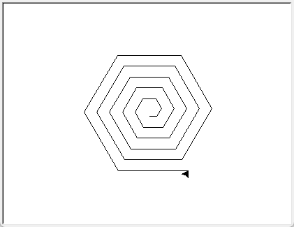
Ručne odkrokujme volanie funkcie spir(92), pritom si zaznačíme, čo sa deje na zásobníku:
pre volanie
spir(92): na zásobníku vznikne nová lokálna premennáds hodnotou 92 … korytnačka nakreslí čiaru, otočí sa a voláspir()s parametrom 95,pre volanie
spir(95): na zásobníku vznikne nová lokálna premennáds hodnotou 95 … korytnačka nakreslí čiaru, otočí sa a voláspir()s parametrom 98,pre volanie
spir(98): na zásobníku vznikne nová lokálna premennáds hodnotou 98 … korytnačka nakreslí čiaru, otočí sa a voláspir()s parametrom 101,pre volanie
spir(101): na zásobníku vznikne nová lokálna premennáds hodnotou 101 … korytnačka už nič nekreslí ani sa nič nevolá … funkciaspir()končí, t.j.zabudnú sa všetky lokálne premenné na tejto úrovni, t.j. premenná
ds hodnotou 101 a riadenie sa vráti za posledné volanie funkciespir()- tá ale končí, t.j.zabudnú sa všetky lokálne premenné na tejto úrovni, t.j. premenná
ds hodnotou 98 a riadenie sa vráti za posledné volanie funkciespir()- tá ale končí, t.j.zabudnú sa všetky lokálne premenné na tejto úrovni, t.j. premenná
ds hodnotou 95 a riadenie sa vráti za posledné volanie funkciespir()- tá ale končí, t.j.zabudnú sa všetky lokálne premenné na tejto úrovni, t.j. premenná
ds hodnotou 92 a riadenie sa vráti za posledné volanie funkciespir()- teda za posledný riadok programu (za riadokspir(92))
Toto nám potvrdia aj kontrolné výpisy vo funkcii:
def spir(d):
print(f'volanie spir({d})')
if d > 100:
pass # nerob nič
print('... trivialny pripad - nerobim nic')
else:
t.fd(d)
t.lt(60)
print(f'... rekurzivne volam spir({d + 3})')
spir(d+3)
print(f'... navrat z volania spir({d + 3})')
spir(92)
volanie spir(92)
... rekurzivne volam spir(95)
volanie spir(95)
... rekurzivne volam spir(98)
volanie spir(98)
... rekurzivne volam spir(101)
volanie spir(101)
... trivialny pripad - nerobim nic
... navrat z volania spir(101)
... navrat z volania spir(98)
... navrat z volania spir(95)
Nakoľko rekurzívne volanie funkcie je iba na jednom mieste, za ktorým už nenasledujú ďalšie príkazy funkcie, toto rekurzívne volanie sa dá ľahko prepísať cyklom while:
def spir(d):
while d <= 100:
t.fd(d);
t.lt(60);
d = d + 3;
Rekurzii, v ktorej za rekurzívnym volaním nie sú ďalšie príkazy, hovoríme chvostová rekurzia (najčastejšie jediné rekurzívne volanie je posledným príkazom funkcie). Takáto rekurzia sa dá prepísať na nerekurzívnu funkciu, napríklad pomocou while-cyklu.
Rekurziu môžeme používať nielen pri kreslení pomocou korytnačky, ale napríklad aj pri výpisoch pomocou print(). V nasledujúcom príklade vypisujeme vedľa seba čísla n, n-1, n-2, …, 2, 1:
def vypis(n):
if n < 1:
pass # nerob nič, len skonči
else:
print(n, end=', ')
vypis(n - 1) # rekurzívne volanie
>>> vypis(20)
20, 19, 18, 17, 16, 15, 14, 13, 12, 11, 10, 9, 8, 7, 6, 5, 4, 3, 2, 1,
Zrejme by to bolo veľmi jednoduché prepísať bez použitia rekurzie, napríklad pomocou while-cyklu (alebo for-cyklu). Poexperimentujme, a vymeňme dva riadky: vypisovanie print() s rekurzívnym volaním vypis(). Po spustení vidíte, že aj táto nová rekurzívna funkcia sa dá prepísať len pomocou while-cyklu (resp. for-cyklu), ale jej činnosť už nemusí byť pre každého na prvý pohľad až tak jasná - odtrasujte túto zmenenú verziu:
def vypis(n):
if n < 1:
pass # nerob nič, len skonči
else:
vypis(n-1)
print(n, end=', ')
>>> vypis(20)
1, 2, 3, 4, 5, 6, 7, 8, 9, 10, 11, 12, 13, 14, 15, 16, 17, 18, 19, 20,
Táto funkcia chce vypísať prvých n čísel. Aby to urobila, najprv vypíše prvých n-1 čísel (volanie vypis(n-1)) a až potom číslo n (posledný príkaz print(n, end=', ')).
Uvedomte si, že túto rekurzívnu funkciu môžeme zapísať aj takto:
def vypis(n):
if n < 1:
return # nerob nič, len skonči
vypis(n-1)
print(n, end=', ')
alebo:
def vypis(n):
if n >= 1:
vypis(n-1)
print(n, end=', ')
Lenže v týchto zápisoch nie je triviálny prípad až tak čitateľný. Preto, kým si na rekurziu nezvykneme a nestane sa pre nás úplne prirodzeným spôsobom riešenia úloh, budeme radšej zvýrazňovať takýto triviálny prípad ako jednu vetvu príkazu if.
Pravá rekurzia¶
Rekurzie, ktoré už nie sú obyčajné chvostové, sú na pochopenie trochu zložitejšie. Pozrime takéto kreslenie špirály:
def spir(d):
if d > 100:
t.pencolor('red') # a skonči
else:
t.fd(d)
t.lt(60);
spir(d + 3)
t.fd(d)
t.lt(60)
spir(1)
Nejaké príkazy sú pred aj za rekurzívnym volaním. Aby sme to lepšie rozlíšili, triviálny prípad nastaví inú farbu pera:
{kind=link}
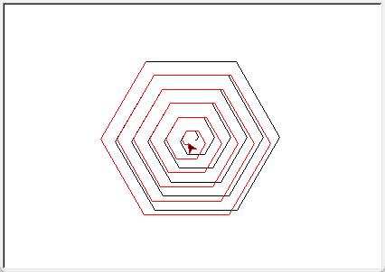
Aj takéto rekurzívne volanie sa dá prepísať pomocou dvoch cyklov:
def spir(d):
pocet = 0
while d <= 100: # čo sa deje pred rekurzívnym volaním
t.fd(d)
t.lt(60)
d += 3
pocet += 1
t.pencolor('red') # triviálny prípad
while pocet > 0: # čo sa deje po vynáraní z rekurzie
d -= 3
t.fd(d)
t.lt(60)
pocet -= 1
Aj v ďalších príkladoch môžete vidieť pravú rekurziu. Napríklad vylepšená funkcia vypis vypisuje postupnosť čísel:
def vypis(n):
if n < 1:
pass # skonči
else:
print(n, end=', ')
vypis(n - 1)
print(n, end=', ')
vypis(10)
10, 9, 8, 7, 6, 5, 4, 3, 2, 1, 1, 2, 3, 4, 5, 6, 7, 8, 9, 10,
Keď ako triviálny prípad pridáme výpis hviezdičiek, toto sa vypíše niekde medzi postupnosť čísel. Viete, kde sa vypíšu tieto hviezdičky?
def vypis(n):
if n < 1:
print('***', end=', ') # a skonči
else:
print(n, end=', ')
vypis(n - 1)
print(n, end=', ')
vypis(10)
V ďalších príkladoch s korytnačkou využívame veľmi užitočnú funkciu poly:
def poly(pocet, dlzka, uhol):
while pocet > 0:
t.fd(dlzka)
t.lt(uhol)
pocet -= 1
Ktorú môžeme cvične prerobiť na rekurzívnu:
def poly(pocet, dlzka, uhol):
if pocet <= 0:
pass # nič nerob len skonči
else:
t.fd(dlzka)
t.lt(uhol)
poly(pocet - 1, dlzka, uhol)
čo môžeme zapísať aj takto (porovnajte tento zápis s verziou s while-cyklom):
def poly(pocet, dlzka, uhol):
if pocet > 0:
t.fd(dlzka)
t.lt(uhol)
poly(pocet - 1, dlzka, uhol)
Zistite, čo kreslia funkcie stvorec a stvorec1:
def stvorec(a):
if a > 100:
pass # nič nerob len skonči
else:
poly(4, a, 90)
stvorec(a + 5)
def stvorec1(a):
if a > 100:
t.lt(180) # a skonči
else:
poly(4, a, 90)
stvorec1(a + 5)
poly(4, a, 90)
Všetky tieto príklady s pravou rekurziou by ste mali vedieť jednoducho prepísať bez rekurzie pomocou niekoľkých cyklov.
Faktoriál¶
V nasledujúcom príklade počítame faktoriál prirodzeného čísla n. Matematici ho niekedy definujú takto:
buď je to
1pren=0alebo
n * (n-1) * (n-2) * ... * 2 * 1pren >= 1
Tu vidíme zapísaný obyčajný cyklus.
Inokedy ale matematici zadefinujú faktoriál n! takto:
n! = 1pren=0(už vieme, že je to triviálny prípad)n! = (n-1)! * n(vidíme rekurzívne volanie)
Prepíšme to rekurzívnou funkciou:
def faktorial(n):
if n == 0:
return 1
return faktorial(n - 1) * n
Triviálnym prípadom je tu úloha, ako vyriešiť 0!. Toto vieme vyriešiť aj bez rekurzie, lebo je to 1. Ostatné prípady sú už rekurzívne: na to, aby sme vyriešili zložitejší problém (n faktoriál), najprv vypočítame jednoduchší (n-1 faktoriál) - zrejme pomocou rekurzie - a z neho skombinujeme (násobením) požadovaný výsledok. Hoci toto riešenie nie je chvostová rekurzia (po rekurzívnom volaní faktorial sa musí ešte násobiť), vieme ho jednoducho prepísať pomocou cyklu. Niekedy sa môžete stretnúť s rekurzívnou verziou faktoriálu, v ktorej je viac ako jeden triviálny prípad:
def faktorial(n):
if n == 0:
return 1
if n == 1:
return 1
return faktorial(n - 1) * n
čo sa zvykne zapisovať aj takto zjednodušene:
def faktorial(n):
if n <= 1:
return 1
return faktorial(n - 1) * n
Zrejme táto verzia pokrýva aj záporné n. Zamyslite sa, ako sa budú správať predchádzajúce verzie so záporným n, napríklad pre faktorial(-2).
Otočenie reťazca¶
Pozrime ďalšiu jednoduchú rekurzívnu funkciu, ktorá otočí znakový reťazec (zrejme to vieme urobiť aj jednoduchšie pomocou retazec[::-1]):
def otoc(retazec):
if len(retazec) <= 1:
return retazec
return otoc(retazec[1:]) + retazec[0]
print(otoc('Bratislava'))
print(otoc('Bratislava' * 110))
Táto funkcia pracuje na tomto princípe:
krátky reťazec (prázdny alebo jednoznakový) sa otáča jednoducho: netreba robiť nič, lebo on je zároveň aj otočeným reťazcom, zrejme výsledkom funkcie je samotný reťazec
dlhšie reťazce otáčame tak, že z neho najprv odtrhneme prvý znak, potom otočíme zvyšok reťazca (to je už kratší reťazec ako pôvodný) a k nemu na koniec prilepíme odtrhnutý prvý znak
Toto funguje dobre, ale veľmi rýchlo narazíme na limity rekurzie: dlhší reťazec ako 1000 znakov už táto rekurzia nezvládne.
Vylepšime tento algoritmus takto:
reťazec budeme skracovať o prvý aj posledný znak, takýto skrátený reťazec rekurzívne otočíme a tieto dva znaky opäť k reťazcu prilepíme, ale v opačnom poradí: na začiatok posledný znak a na koniec prvý:
def otoc(retazec): if len(retazec) <= 1: return retazec return retazec[-1] + otoc(retazec[1:-1]) + retazec[0] print(otoc('Bratislava')) print(otoc('Bratislava' * 110)) print(otoc('Bratislava' * 220))
Táto funkcia už pracuje pre približne 1000-znakový reťazec správne, ale opäť nefunguje pre reťazce dlhšie ako 2000.
Ďalšie vylepšenie tohto algoritmu už nie je také zrejmé:
reťazec rozdelíme na dve polovice (pritom pre nepárnu dĺžku jedna z polovíc môže byť o 1 kratšia ako druhá)
každú polovicu samostatne otočíme
tieto dve otočené polovice opäť zlepíme dokopy, ale v opačnom poradí: najprv pôjde druhá polovica a za ňou prvá
def otoc(retazec): if len(retazec) <= 1: return retazec stred = len(retazec) // 2 prva = otoc(retazec[:stred]) druha = otoc(retazec[stred:]) return druha + prva print(otoc('Bratislava')) print(otoc('Bratislava' * 110)) print(otoc('Bratislava' * 220)) povodny = 'Bratislava' * 100000 r = otoc(povodny) print(len(r), r == povodny[::-1])
Zdá sa, že tento algoritmus už nemá problém s obmedzením na hĺbku vnorenia rekurzie. Zvládol aj 1000000-znakový reťazec.
Vidíme, že pri rozmýšľaní nad rekurzívnym riešením problému je veľmi dôležité správne rozdeliť veľký problém na jeden alebo aj viac menších, tie rekurzívne vyriešiť a potom to správne spojiť do jedného výsledku (informatici tomu hovoria rozdeľuj a panuj). Pri takomto rozhodovaní funguje matematická intuícia a tiež nemalá programátorská skúsenosť. Hoci nie vždy to ide tak elegantne, ako pri otáčaní reťazca.
Uvedomte si, že toto posledné rekurzívne riešenie prepíšeme na while-cykly len s veľkou programátorskou námahou.
Binomické koeficienty¶
Ďalší príklad ilustruje využitie rekurzie pri výpočte binomických koeficientov. Vieme, že binomické koeficienty sa dajú vypočítať pomocou matematického vzorca:
bin(n, k) = n! / (k! * (n-k)!)
Teda výpočtom nejakých troch faktoriálov a potom ich delením. Pre veľké n to môžu byť dosť veľké čísla, napríklad bin(1000, 1) potrebuje vypočítať 1000! a tiež 999!, čo sú dosť veľké čísla, ale ich vydelením dostávame výsledok len 1000. Takýto postup počítať binomické koeficienty pomocou faktoriálov asi nie je najvhodnejší.
Tieto koeficienty ale vieme zobraziť aj pomocou Pascalovho trojuholníka, napríklad takto:
1
1 1
1 2 1
1 3 3 1
1 4 6 4 1
1 5 10 10 5 1
Každý prvok v tomto trojuholníku zodpovedá bin(n, k), kde n je riadok tabuľky a k je stĺpec. Pre túto tabuľku poznáme aj takýto vzťah:
bin(n, k) = bin(n-1, k-1) + bin(n-1, k)
t.j. každé číslo je súčtom dvoch čísel v riadku nad sebou, pričom na kraji tabuľky sú 1. To je predsa krásna rekurzia, v ktorej kraj tabuľky je triviálny prípad:
def bin(n, k):
if k == 0 or n == k:
return 1
return bin(n - 1, k - 1) + bin(n - 1, k)
for n in range(6):
for k in range(n + 1):
print(bin(n, k), end=' ')
print()
po spustení:
1
1 1
1 2 1
1 3 3 1
1 4 6 4 1
1 5 10 10 5 1
Všimnite si, že v tomto algoritme nie je žiadne násobenie iba sčitovanie a ak by sme aj toto sčitovanie previedli na zreťazovanie reťazcov, videli by sme:
def bin_retazec(n, k):
if k == 0 or n == k:
return '1'
return bin_retazec(n - 1, k - 1) + '+' + bin_retazec(n - 1, k)
print(bin(6, 3), '=', bin_retazec(6, 3))
20 = 1+1+1+1+1+1+1+1+1+1+1+1+1+1+1+1+1+1+1+1
Rekurzívny algoritmus pre výpočet binárnych koeficientov by mohol využívať vlastne len pripočítavanie jednotky.
Fibonacciho čísla¶
Na podobnom princípe, ako napríklad výpočet faktoriálu, funguje aj fibonacciho postupnosť čísel: postupnosť začína dvomi členmi 0, 1. Každý ďalší člen sa vypočíta ako súčet dvoch predchádzajúcich, teda:
triviálny prípad:
fibonacci(0) = 0triviálny prípad:
fibonacci(1) = 1rekurzívny popis:
fibonacci(n) = fibonacci(n-1) + fibonacci(n-2)
Zapíšeme to v Pythone:
def fibonacci(n):
if n < 2:
return n
return fibonacci(n - 1) + fibonacci(n - 2)
>>> for i in range(15):
... print(fibonacci(i), end=', ')
0, 1, 1, 2, 3, 5, 8, 13, 21, 34, 55, 89, 144, 233, 377,
Tento rekurzívny algoritmus je ale veľmi neefektívny, napríklad fibonacci(100) asi nevypočítate ani na najrýchlejšom počítači.
V čom je tu problém? Veď nerekurzívne je to veľmi jednoduché, napríklad:
def fibonacci(n):
a, b = 0, 1
while n > 0:
a, b = b, a + b
n -= 1
return a
for i in range(15):
print(fibonacci(i), end=', ')
print('\nfibonacci(100) =', fibonacci(100))
0, 1, 1, 2, 3, 5, 8, 13, 21, 34, 55, 89, 144, 233, 377,
fibonacci(100) = 354224848179261915075
Pridajme do rekurzívnej verzie funkcie fibonacci() globálne počítadlo, ktoré bude počítať počet zavolaní tejto funkcie (nie je to počet rekurzívnych vnorení):
def fibonacci(n):
global pocet
pocet += 1
if n < 2:
return n
return fibonacci(n-1) + fibonacci(n-2)
pocet = 0
print('fibonacci(15) =', fibonacci(15))
print('pocet volani funkcie =', pocet)
pocet = 0
print('fibonacci(16) =', fibonacci(16))
print('pocet volani funkcie =', pocet)
fibonacci(15) = 610
pocet volani funkcie = 1973
fibonacci(16) = 987
pocet volani funkcie = 3193
Vidíme, že tento počet volaní veľmi rýchlo rastie a je určite väčší ako samotné fibonacciho číslo. Preto aj fibonacci(100) by trvalo veľmi dlho (vyše 354224848179261915075 volaní funkcie).
Binárne stromy¶
Medzi informatikmi sú veľmi populárne binárne stromy. Rekurzívne kresby binárnych stromov sa najlepšie kreslia pomocou grafického pera korytnačky. Aby sa nám lepšie o binárnych stromoch rozprávalo, zavedieme pojem úroveň stromu, t.j. číslo n, pre ktoré platí:
ak je úroveň stromu
n= 0, nakreslí sa len čiara nejakej dĺžky (kmeň stromu)pre
n>= 1, sa najprv nakreslí čiara, potom sa na jej konci nakreslí najprv vľavo celý binárny strom úrovne(n-1)a potom vpravo opäť binárny strom úrovne(n-1)(hovoríme im podstromy) - po nakreslení týchto podstromov sa ešte vráti späť po prvej nakreslenej čiarepo skončení kreslenia stromu ľubovoľnej úrovne sa korytnačka nachádza na mieste, kde začala kresliť
ľavé aj pravé podstromy môžu mať buď rovnako veľké konáre ako kmeň stromu, alebo sa môžu v nižších úrovniach (teda v podstromoch) zmenšovať
Úroveň stromu nám hovorí o počte rekurzívnych vnorení pri kreslení stromu (podobne budeme neskôr definovať aj iné rekurzívne obrázky a často budeme pritom používať pojem úroveň).
Najprv ukážeme binárny strom, ktorý má vo všetkých úrovniach rovnako veľké podstromy:
import turtle
def strom(n):
if n == 0:
t.fd(30) # triviálny prípad
t.bk(30)
else:
t.fd(30)
t.lt(40) # natoč sa na kreslenie ľavého podstromu
strom(n - 1) # nakresli ľavý podstrom (n-1). úrovne
t.rt(80) # natoč sa na kreslenie pravého podstromu
strom(n - 1) # nakresli pravý podstrom (n-1). úrovne
t.lt(40) # natoč sa do pôvodného smeru
t.bk(30) # vráť sa na pôvodné miesto
t = turtle.Turtle()
t.lt(90)
strom(4)
{kind=link}
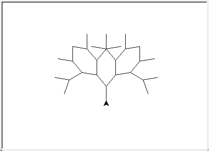
Binárne stromy môžeme rôzne vylepšovať, napríklad vetvy stromu sa vo vyšších úrovniach môžu rôzne skracovať, uhol o ktorý je natočený ľavý a pravý podstrom môže byť tiež rôzny. V tomto riešení si všimnite, kde je skrytý triviálny prípad rekurzie:
import turtle
def strom(n, d):
t.fd(d)
if n > 0:
t.lt(40)
strom(n - 1, d * 0.7)
t.rt(75)
strom(n - 1, d * 0.6)
t.lt(35)
t.bk(d)
t = turtle.Turtle()
t.lt(90)
strom(5, 80)
{kind=link}
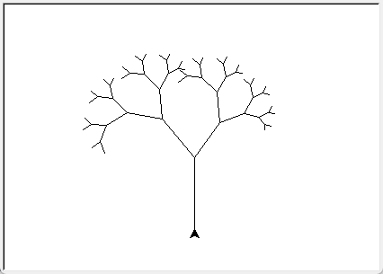
Algoritmus binárneho stromu môžeme zapísať aj bez parametra n, ktorý určuje úroveň stromu. V tomto prípade rekurzia končí, keď sú kreslené úsečky príliš malé:
import turtle
def strom(d):
t.fd(d)
if d > 5:
t.lt(40)
strom(d * 0.7)
t.rt(75)
strom(d * 0.6)
t.lt(35)
t.bk(d)
turtle.delay(0)
t = turtle.Turtle()
t.lt(90)
strom(80)
Ak využijeme náhodný generátor, môžeme vytvárať stromy, ktoré budú navzájom rôzne:
import turtle
import random
def strom(n, d):
t.pensize(2 * n + 1)
t.fd(d)
if n == 0:
t.dot(10, 'green')
else:
uhol1 = random.randint(20, 40)
uhol2 = random.randint(20, 60)
t.lt(uhol1)
strom(n - 1, d * random.randint(40, 70) / 100)
t.rt(uhol1 + uhol2)
strom(n - 1, d * random.randint(40, 70) / 100)
t.lt(uhol2)
t.bk(d)
turtle.delay(0)
t = turtle.Turtle()
t.lt(90)
t.pencolor('maroon')
strom(6, 150)
{kind=link}
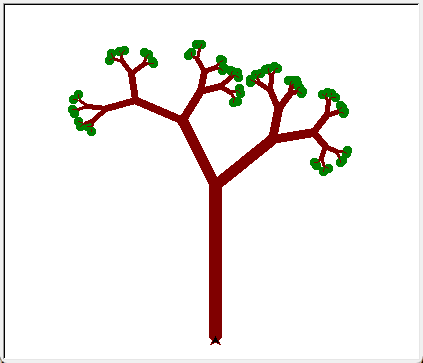
V tomto riešení si všimnite, kde sme zmenili hrúbku pera, aby sa strom kreslil rôzne hrubý v rôznych úrovniach. Tiež sa tu na posledných „konároch“ nakreslili zelené listy - pridali sme ich v triviálnom prípade. Využili sme tu korytnačiu metódu t.dot(veľkosť, farba), ktorá na pozícii korytnačky nakreslí bodku danej veľkosti a farby.
Každé spustenie tohto programu nakreslí trochu iný strom. Môžeme vytvoriť celú alej stromov, v ktorej bude každý strom trochu iný:
import turtle
import random
def strom(n, d):
t.pensize(2 * n + 1)
t.fd(d)
if n == 0:
t.dot(10, 'green')
else:
uhol1 = random.randint(20, 40)
uhol2 = random.randint(20, 60)
t.lt(uhol1)
strom(n - 1, d * random.randint(40, 70) / 100)
t.rt(uhol1 + uhol2)
strom(n - 1, d * random.randint(40, 70) / 100)
t.lt(uhol2)
t.bk(d)
turtle.delay(0)
t = turtle.Turtle()
t.speed(0)
t.lt(90)
t.pencolor('maroon')
for i in range(6):
t.pu()
t.setpos(100 * i - 250, -50)
t.pd()
strom(5, 50)
{kind=link}
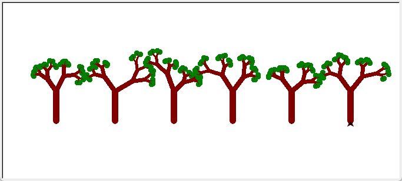
V nasledujúcom riešení vzniká zaujímavý efekt tým, že v triviálnom prípade urobí korytnačka malý úkrok vpravo a teda sa nevracia po tých istých čiarach a preto sa ani nevráti presne na to isté miesto, kde štartovala kresliť (pod)strom. Táto „chybička“ sa stále zväčšuje a zväčšuje, až pri nakreslení kmeňa stromu je už dosť veľká:
import turtle
def strom(n, d):
t.fd(d)
if n == 0:
t.rt(90)
t.fd(1)
t.lt(90)
else:
t.lt(40)
strom(n - 1, d * 0.67)
t.rt(75)
strom(n - 1, d * 0.67)
t.lt(35)
t.bk(d)
turtle.delay(0)
t = turtle.Turtle()
t.lt(90)
strom(6, 120)
{kind=link}
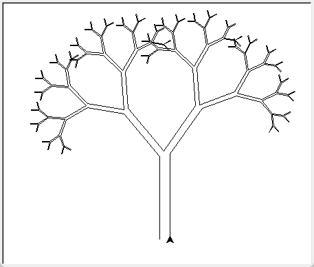
Binárny strom sa dá nakresliť viacerými spôsobmi aj nerekurzívne. V jednom z nich využijeme zoznam korytnačiek, pričom každá z nich po nakreslení jednej úsečky „narodí“ na svojej pozícii ďalšiu korytnačku (vytvorí svoju kópiu), pričom ju ešte trochu otočí. Idea algoritmu je takáto:
prvá korytnačka nakreslí kmeň stromu - prvú úsečku dĺžky
dna jeho konci (na momentálnej pozícii tejto korytnačky) sa vyrobí jedna nová korytnačka, s novým relatívnym natočením o 40 stupňov vľavo (pripravuje sa, že bude kresliť ľavý podstrom) a sama sa otočí o 50 stupňov vpravo (pripravuje sa, že bude kresliť pravý podstrom)
dĺžka
dsa zníži napríklad nad* 0.6všetky korytnačky teraz prejdú v svojom smere dĺžku
d(nakreslia úsečku dĺžkyd) a opäť sa na ich koncových pozíciách vytvoria nové korytnačky otočené o 40 a samé sa otočia o 50 stupňov, adsa opäť znížitoto sa opakuje
nkrát a takto sa nakreslí kompletný stromimport turtle def nova(pos, heading): t = turtle.Turtle() #t.speed(0) #t.ht() t.pu() t.setpos(pos) t.seth(heading) t.pd() return t def strom(n, d): zoznam = [nova([0, -300], 90)] for i in range(n): for j in range(len(zoznam)): t = zoznam[j] t.pensize(3 * n - 3 * i + 1) t.pencolor('maroon') t.fd(d) if i == n - 1: t.dot(20, 'green') else: zoznam.append(nova(t.pos(), t.heading() + 40)) t.rt(50) d *= 0.6 print('pocet korytnaciek =', len(zoznam)) # turtle.delay(0) strom(7, 300)
{kind=link}
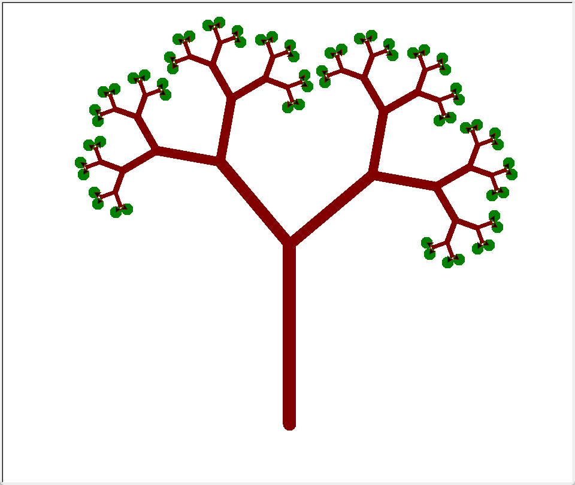
Pre korytnačky na poslednej úrovni sa už ďalšie nevytvárajú, ale na ich koncoch sa nakreslí zelená bodka. Program na záver vypíše celkový počet korytnačiek, ktoré sa takto vyrobili (je ich presne toľko, koľko je zelených bodiek ako listov stromu). Všimnite si pomocnú funkciu nova(), ktorá vytvorí novú korytnačku a nastaví jej novú pozíciu aj smer natočenia. Funkcia ako výsledok vráti túto novovytvorenú korytnačku. V tomto prípade program vypísal:
pocet korytnaciek = 64
Ďalšie rekurzívne obrázky¶
Napíšeme funkciu, ktorá nakreslí obrázok stvorce úrovne n, veľkosti a s týmito vlastnosťami:
pre
n= 0 nekreslí ničpre
n= 1 kreslí štvorec so stranou dĺžkyapre
n> 1 kreslí štvorec, v ktorom v každom jeho rohu (smerom dnu) je opäť obrázokstvorceale už zmenšený: úrovnen-1 a veľkostia/3
Štvorce v každom rohu štvorca:
import turtle
def stvorce(n, a):
if n == 0:
pass
else:
for i in range(4):
t.fd(a)
t.rt(90)
stvorce(n - 1, a / 3)
# skúste: stvorce(n - 1, a * 0.45)
turtle.delay(0)
t = turtle.Turtle()
stvorce(4, 300)
{kind=link}
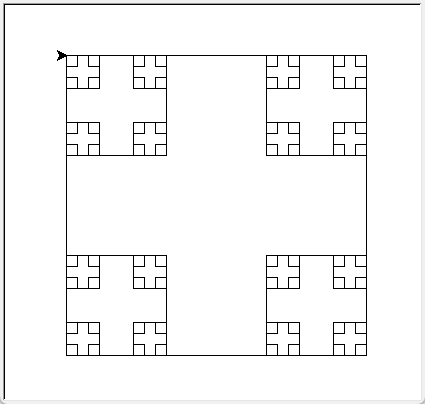
Uvedomte si, že toto nie je chvostová rekurzia.
Tesne pred rekurzívnym volaním otočíme korytnačku o 30 stupňov a po návrate z rekurzie týchto 30 stupňov vrátime:
import turtle
def stvorce(n, d):
if n > 0:
for i in range(4):
t.fd(d)
t.rt(90)
t.lt(30)
stvorce(n - 1, d / 3)
t.rt(30)
turtle.delay(0)
t = turtle.Turtle()
t.speed(0)
stvorce(5, 300)
{kind=link}
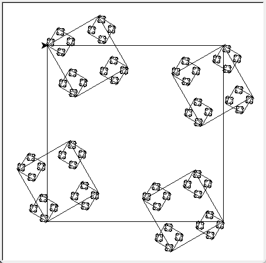
Sierpińského trojuholník¶
Rekurzívny obrázok na rovnakom princípe ako boli vnorené štvorce ale trojuholníkového tvaru navrhol poľský matematik Sierpińský ešte v roku 1915:
import turtle
def trojuholniky(n, a):
if n > 0:
for i in range(3):
t.fd(a)
t.lt(120)
trojuholniky(n - 1, a / 2)
turtle.delay(0)
t = turtle.Turtle()
#t.speed(0)
trojuholniky(6, 300)
{kind=link}
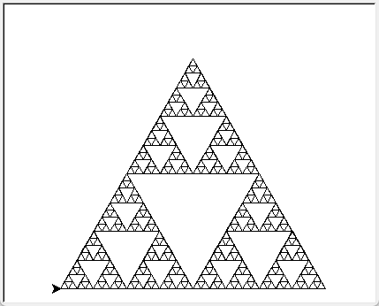
Zaujímavé je to, že táto rekurzívna krivka sa dá nakresliť aj jedným ťahom (po každej čiare sa prejde len raz). Porozmýšľajte ako.
Snehová vločka¶
Ďalej ukážeme veľmi známu rekurzívnu krivku - snehovú vločku (známu tiež ako Kochova krivka):
import turtle
def vlocka(n, d):
if n == 0:
t.fd(d)
else:
vlocka(n - 1, d / 3)
t.lt(60)
vlocka(n - 1, d / 3)
t.rt(120)
vlocka(n - 1, d / 3)
t.lt(60)
vlocka(n - 1, d / 3)
def sneh_vlocka(n, d):
for i in range(3):
vlocka(n, d)
t.rt(120)
turtle.delay(0)
t = turtle.Turtle()
t.speed(0)
t.lt(120)
sneh_vlocka(4, 300)
{kind=link}
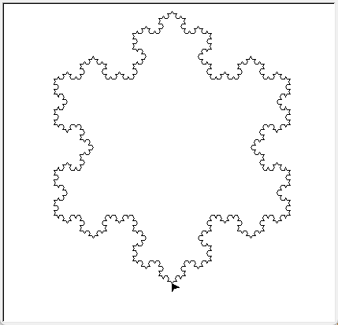
Ak namiesto jedného volania funkcie vlocka() zapíšeme nakreslenie aj všetkých predchádzajúcich úrovní krivky, dostávame tiež zaujímavú kresbu:
import turtle
def vlocka(n, d):
if n == 0:
t.fd(d)
else:
vlocka(n - 1, d / 3)
t.lt(60)
vlocka(n - 1, d / 3)
t.rt(120)
vlocka(n - 1, d / 3)
t.lt(60)
vlocka(n - 1, d / 3)
def sneh_vlocka(n, d):
for i in range(3):
vlocka(n, d)
t.rt(120)
turtle.delay(0)
t = turtle.Turtle()
#t.speed(0)
t.lt(120)
for i in range(5):
sneh_vlocka(i, 300)
{kind=link}
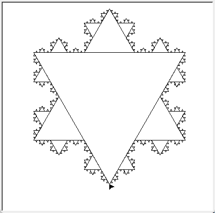
Ďalšie fraktálové krivky¶
Špeciálnou skupinou rekurzívnych kriviek sú fraktály (pozri aj na wikipédii). Už pred érou počítačov sa s nimi „hrali“ aj významní matematici (niektoré krivky podľa nich dostali aj svoje meno, aj snehová vločka je fraktálom a vymyslel ju švédsky matematik Koch). Zjednodušene by sme mohli povedať, že fraktál je taká krivka, ktorá sa skladá z viacerých svojich zmenšených kópií. Keby sme sa na nejakú jej časť pozreli lupou, videli by sme opäť skoro tú istú krivku. Napríklad aj binárne stromy a aj snehové vločky sú fraktály.
C-krivka¶
Začneme veľmi jednoduchou, tzv. C-krivkou:
import turtle
def ckrivka(n, s):
if n == 0:
t.fd(s)
else:
ckrivka(n - 1, s)
t.lt(90)
ckrivka(n - 1, s)
t.rt(90)
turtle.delay(0)
t = turtle.Turtle()
t.speed(0)
t.ht()
ckrivka(9, 4) # skúste aj: ckrivka(13, 2)
{kind=link}
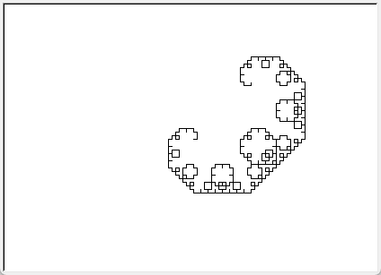
Dračia krivka¶
C-krivke sa veľmi podobá Dračia krivka, ktorá sa skladá z dvoch „zrkadlových“ funkcií: ldrak a pdrak. Všimnite si zaujímavú vlastnosť týchto dvoch rekurzívnych funkcií: prvá rekurzívne volá samu seba ale aj druhú a druhá volá seba aj prvú. Našťastie Python toto zvláda veľmi dobre:
import turtle
def ldrak(n, s):
if n == 0:
t.fd(s)
else:
ldrak(n - 1, s)
t.lt(90)
pdrak(n - 1, s)
def pdrak(n, s):
if n == 0:
t.fd(s)
else:
ldrak(n - 1, s)
t.rt(90)
pdrak(n - 1, s)
turtle.delay(0)
t = turtle.Turtle()
t.speed(0)
t.ht()
ldrak(12, 6)
{kind=link}
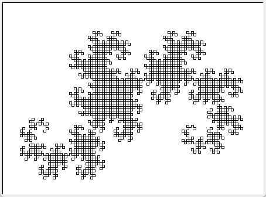
Dračiu krivku môžeme nakresliť aj len jednou funkciou - táto bude mať o jeden parameter u viac a to, či je to ľavá alebo pravá verzia funkcie:
import turtle
def drak(n, s, u=90):
if n == 0:
t.fd(s)
else:
drak(n - 1, s, 90)
t.lt(u)
drak(n - 1, s, -90)
turtle.delay(0)
t = turtle.Turtle()
t.speed(0)
t.ht()
drak(14, 2)
{kind=link}
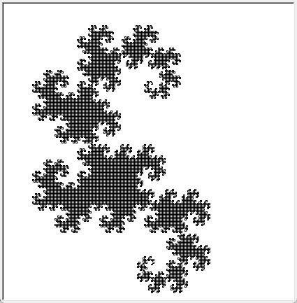
Hilbertova krivka¶
V literatúre je veľmi známou Hilbertova krivka, ktorá sa tiež skladá z dvoch zrkadlových častí (ako dračia krivka) a preto ich definujeme jednou funkciou a parametrom u (t.j. uhol pre ľavú a pravú verziu):
import turtle
def hilbert(n, s, u=90):
if n > 0:
t.lt(u)
hilbert(n - 1, s, -u)
t.fd(s)
t.rt(u)
hilbert(n - 1, s, u)
t.fd(s)
hilbert(n - 1, s, u)
t.rt(u)
t.fd(s)
hilbert(n - 1, s, -u)
t.lt(u)
turtle.delay(0)
t = turtle.Turtle()
t.speed(0)
t.ht()
hilbert(5, 7) # vyskúšajte: hilbert(7, 2)
{kind=link}
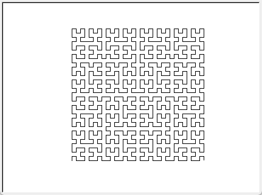
Ďalšie inšpirácie na rekurzívne krivky môžete nájsť na wikipédii.
Cvičenie¶
Poznámka
riešenia úloh ulož do jedného súboru a odovzdaj na testovací server https://vektor.fmph.uniba.sk/
testovací server bude testovať úlohy označené odovzdaj
snaž sa vyriešiť čo najviac úloh aj takých, ktoré netestuje testovač
niektoré úlohy sú uvedené aj s riešením (sú označené znakom -), tie neodovzdávaj - sú určené na štúdium a inšpiráciu
prvé tri riadky súboru s riešením musia obsahovať:
# 9. cvicenie # student: Janko Hrasko # datum: 21.10.2025
zrejme ako študenta uvedieš svoje meno.
používaj len konštrukcie z doterajších prednášok (nepoužívaj
global)
- Napíš funkciu
tostr(cislo), ktorá pomocou štandardnej funkciechr()(bez konverziestr()) prevedie dané nezáporné celé číslo na znakový reťazec. Napíš túto funkciu najprv bez rekurzie pomocou while-cyklu, potom ju prepíš na rekurzívnu funkciu bez cyklu. Triviálnym prípadom by mohlo byť jednociferné celé číslo. Rekurzívny prípad najprv prevedie na reťazec číslo bez poslednej cifry a potom k nemu prireťazí poslednú cifru. Funkcia nič nevypisuje. Napríklad:>>> tostr(0) '0' >>> tostr(17) '17' >>> tostr(987654321) '987654321'
- Napíš funkciu
toint(retazec), ktorá prevedie daný reťazec na celé číslo. Môžeš predpokladať, že reťazec je neprázdny a obsahuje len desiatkové cifry. Funkcia nebude používať štandardnú funkciuintale len funkciuord(). Napíš túto funkciu najprv bez rekurzie pomocou while-cyklu, potom ju prepíš na rekurzívnu funkciu bez cyklu. Triviálnym prípadom by mohol byť jednoznakový vstupný reťazec (určite je to cifra). Rekurzívny prípad najprv prevedie celý reťazec ale bez posledného znaku na číslo, toto vynásobí10a pripočíta k tomu prevedený posledný znak reťazca. Funkcia nič nevypisuje. Napríklad:>>> toint('0') 0 >>> toint('17') 17 >>> toint('987654321') 987654321
- Napíš rekurzívnu funkciu
pocet(znak, retazec), ktorá bez cyklu a reťazcových metód zistí počet výskytov zadaného znaku vo vstupnom reťazci. Otestuj, napríklad:>>> pocet('m', 'mama ma emu a ema ma mamu') 8
Teraz vyrieš tento príklad tak, aby fungoval aj pre dlhšie reťazce. Inšpiruj sa funkciou
otoc()z prednášky. Otestuj, napríklad:>>> pocet('a', 'ab'*100000) 100000
odovzdaj Napíš funkciu
min_max(zoznam), ktorá pre neprázdnyzoznamvráti (return) dvojicu hodnôt (najmenší, najväčší) prvok. Funkcia nepoužíva štandardné funkcieminamax. Nepoužívaj globálne premenné. Riešenie bez rekurzie by mohlo vyzerať takto:def min_max(zoznam): minz = maxz = zoznam[0] for p in zoznam[1:]: if p < minz: minz = p if p > maxz: maxz = p return minz, maxz
Teraz to vyrieš rekurzívne bez cyklov.
odovzdaj Funkciu
nsd(a, b)(najväčší spoločný deliteľ) vieme zapísať rekurzívne takto: triviálny prípad je vtedy, keďa==b, inak aka>b, tak rekurzívne vypočítansd(b, a), inak rekurzívne zavolánsd(a, b-a). Napríklad:def nsd(a, b): if a == b: return a if a > b: return nsd(b, a) return nsd(a, b - a)
Funkcia
nsdsa dá ale urýchliť tak, že namiesto odčitovania sa nejako využije zvyšok po delení. Oprav túto funkciu.
odovzdaj Napíš funkciu
sucet(zoznam), ktorá bez cyklov, ale pomocou rekurzie zistí súčet prvkov zoznamu, resp. ľubovoľnej postupnosti celých čísel. Prvkami sú len celé čísla. Otestuj, napríklad:>>> sucet([2, 4, 6, 8]) 20 >>> sucet(()) 0 >>> sucet(range(500)) 124750
Rekurzia bude fungovať na takomto princípe:
triviálny prípad: zoznam je prázdny
inak: rekurzívne vypočítaj súčet všetkých prvkov zoznamu okrem prvého a k výsledku pripočítaj prvý prvok:
def sucet(zoznam): if len(zoznam) == 0: return 0 return zoznam[0] + sucet(zoznam[1:])
Ak otestujeme
sucet(range(2000)), spadne to na pretečení rekurzie. Napíš novú verziu tejto rekurzívnej funkcie tak, tak aby fungovalo ajsucet(range(10000)). Inšpiruj sa riešením funkcieotocz prednášky:triviálny prípad: zoznam je prázdny alebo jednoprvkový
inak: zoznam sa rozdelí na dve polovice a rekurzívne sa zistí súčet pre každú polovicu zvlášť
odovzdaj Napíš rekurzívnu funkciu
mocnina(n, k), ktorá vypočítan**kpre celé nezápornéklen pomocou násobenia:mocnina(n, 0)= 1mocnina(n, k)=mocnina(n, k-1) * n
Funkcia, napríklad:
def mocnina(n, k): if k == 0: return 1 return n * mocnina(n, k - 1) print(mocnina(2, 900) == 2 ** 900)
Keďže nefunguje volanie
mocnina(2, 10000), vylepši túto funkcie podľa tohto rekurzívneho predpisu:mocnina(n, 0)= 1mocnina(n, k)=mocnina(n, k//2) ** 2… pre párnekmocnina(n, k)=mocnina(n, k-1) * n… pre nepárnek
Využíva sa tu umocňovanie na
2, čo je opäť len násobením dvoch čísel.
odovzdaj Napíš rekurzívnu funkciu
palindrom(retazec), ktorá zistí (vrátiTruealeboFalse), či je zadaný reťazec palindróm, t.j. či sa číta rovnako od začiatku ako od konca. Pri tomto zisťovaní sa nerozlišujú malé a veľké písmená, napríklad:>>> palindrom('JelenoviPivoNelej') True
Rekurzia by mala pracovať na takomto princípe: porovná prvé a posledné písmeno a ak sú zhodné ešte zistí, či aj reťazec bez prvého a posledného písmena je palindróm:
triviálny prípad: reťazec je prázdny alebo jednoznakový =>
Trueinak: musia sa zhodovoť prvý a posledný znak a tiež zvyšok reťazca (okrem prvého a posledného) je palindróm (rekurzívne volanie)
Napíš rekurzívnu funkciu
dva_sucty(zoznam), ktorá bez cyklov zistí súčet záporných prvkov zoznamu a súčet kladných prvkov zoznamu (ľubovoľnej postupnosti čísel). Funkcia vráti dvojicu (tuple) týchto dvoch súčtov. Riešenie si premysli tak, aby funkcia prešla prvkami vstupného zoznamu len raz. Otestuj, napríklad:>>> dva_sucty(range(-5, 7)) (-15, 21) >>> dva_sucty((0, 1, -2, 3, 4, -5, -6, 7)) (-13, 15) >>> dva_sucty(list(range(100)) + list(range(0, -100, -1))) (-4950, 4950) >>> dva_sucty([0]*1000+[1]+[0]*1000+[-1]+[0]*1000) (-1, 1)
- Do funkcie
strom, pomocou ktorej korytnačka nakreslí binárny strom, dopíš kreslenie farebných bodiek na koncoch všetkých vetvičiek (napríklad pomocout.dot(10, farba)). Farbu každej bodky postupne (cyklicky) vyberaj zo zoznamu fariebzoznam:zoznam = ['red', 'blue', 'gold', 'green'] def strom(d): t.fd(d) if d > 10: t.lt(40) strom(d * 0.7) t.rt(75) strom(d * 0.6) t.lt(35) t.bk(d) t.lt(90) t.pu() t.fd(-200) t.pd() strom(100)
Aby toto fungovalo aj s použitím posúvača (vtedy pri každom posune zmaže doterajšiu kresbu a nakreslí ju s novým parametrom
d):tkinter.Scale(orient='horizontal', from_=10, to=200, command=rob).pack()
bude treba maximálne urýchliť kreslenie stromu vo funkcii
rob. Tiež si uvedom, že táto funkcia musí mať jeden formálny parameter, v ktorom nám systém vráti momentálnu hodnotu bežca posúvača (ako reťazec). Na urýchlenie kreslenia stromu môžeš na začiatku funkcierobvložiťturtle.tracer(0)a na koniecturtle.tracer(1). Program by mal správne fungovať prezoznams ľubovoľným počtom farieb.
Funkciu
stromz predchádzajúcej úlohy uprav takto:namiesto farebných bodiek sa na koncoch vetvičiek vytvoria nové korytnačky, ktoré budú mať nastavenú farbu
color('green')všetky tieto nové korytnačky sa uložia do globálneho zoznamu
zoznamstrom vykreslí ako
strom(150)
Posúvač z predchádzajúcej úlohy zruš a namiesto neho vytvor nové tlačidlo (
tkinter.Button(...)) s textom'Otáčaj', ktorý bude otáčať všetky korytnačky v zozname:for i in range(24): for k in zoznam: k.lt(15)
Z prednášky vieme nakresliť Sierpińského trojuholník takto:
def trojuholniky(n, a): if n > 0: for i in range(3): t.fd(a) t.lt(120) trojuholniky(n - 1, a / 2) trojuholniky(4, 300)
Uprav túto rekurzívnu funkciu tak, aby všetky kreslené trojuholníky v 1. úrovni boli vyfarbené náhodnou farbou. Trojuholníky vo vyšších úrovniach nevyfarbuj. Táto kresba vyzerá ešte lepšie, keď sa bude kresliť so zdvihnutým perom.
Ďalej pridaj posúvač:
tkinter.Scale(orient='horizontal', from_=1, to=7, command=rob).pack()
pomocou ktorého sa prekreslia trojuholníky už s novou úrovňou. Realizuj to podobne ako v 6. úlohe, v ktorej si urýchľoval vykresľovanie rekurzívneho obrázka pomocou dvojice
turtle.tracer(0)aturtle.tracer(1).- Rekurzívna krivka je popísaná takýmto predpisom:
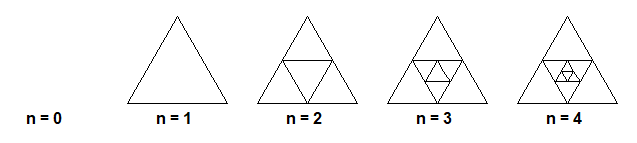
Napíš funkciu
vpisane3(n, a), v ktorej prvý parameternoznačuje úroveň vnorenia trojuholníkov, druhý parameteraveľkosť vonkajšieho trojuholníka. Pren = 0funkcia nekreslí nič.
{kind=link}
Rekurzívna krivka je popísaná takýmto predpisom:
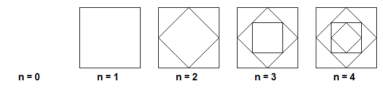
Napíš funkciu
vpisane4(n, a), v ktorej prvý parameternoznačuje úroveň vnorenia štvorcov, druhý parameteraveľkosť vonkajšieho štvorca. Pren = 0funkcia nekreslí nič.
{kind=link}
Rekurzívna krivka je popísaná takýmto predpisom:
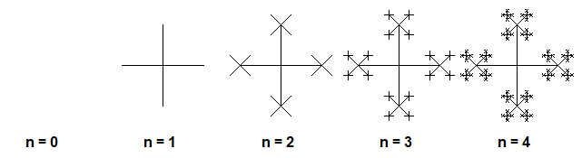
Napíš funkciu
kriziky4(n, a), v ktorej prvý parameternoznačuje úroveň krivky, druhý parameteradĺžku ramena kríža. Na všetkých piatich obrázkov je rovnakéa. Vnorené krížiky majú tretinovú dĺžku. Pren = 0funkcia nekreslí nič.
{kind=link}
Rekurzívna krivka je popísaná takýmto predpisom:
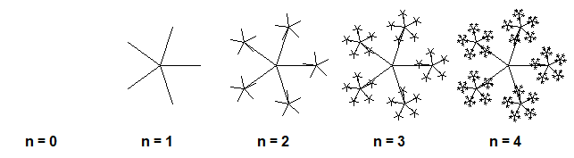
Napíš funkciu
kriziky(n, a, pocet), v ktorej prvý parameternoznačuje úroveň krivky, druhý parameteradĺžku ramena kríža. Tretí parameterpocetoznačuje počet ramien kríža - na obrázku jepocet = 5. Predchádzajúca krivkakriziky4by sa dala nakresliť aj touto funkciou prepocet = 4.
{kind=link}
Rekurzívna krivka je popísaná takýmto predpisom:
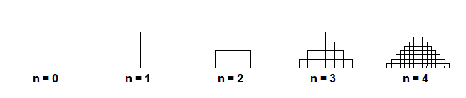
Napíš funkciu
pyramida(n, a), v ktorej prvý parameternoznačuje úroveň krivky, druhý parameteraveľkosť obrázka (dĺžka spodnej hrany). Na všetkých piatich obrázkov je rovnakéa. Všimni si, že obrázok pren = 2vznikol tak, že sa štyrikrát nakreslila krivka úrovnen-1a korytnačka sa medzi tým otáčala vľavo 90, vpravo 180 a vľavo 90 (na začiatku kresby bola úplne vľavo).
{kind=link}
Rekurzívna krivka je popísaná takýmto predpisom:
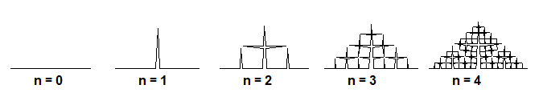
Napíš funkciu
pyramida3(n, a), v ktorej prvý parameternoznačuje úroveň krivky, druhý parameteraveľkosť obrázka (dĺžka spodnej hrany). Na všetkých piatich obrázkov je rovnakéa. Obrázok vznikol rovnako ako v predchádzajúcej úlohe (funkciapyramida), ale medzi kresleniami vnorených menších kriviek sa korytnačka otáčala vľavo 87, vpravo 174 a vľavo 87.
{kind=link}
Rekurzívna krivka je popísaná takýmto predpisom:
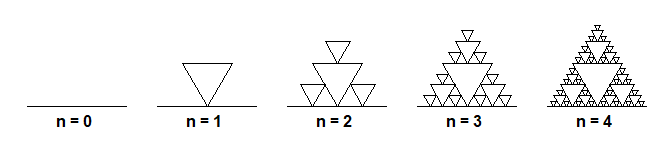
Napíš funkciu
troj3(n, a), v ktorej prvý parameternoznačuje úroveň krivky, druhý parameteraveľkosť obrázka (dĺžka spodnej hrany). Na všetkých piatich obrázkov je rovnakéa.
{kind=link}